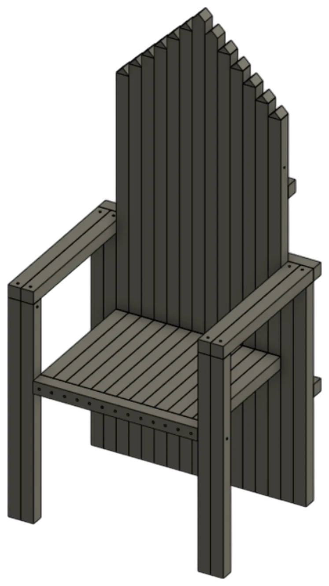
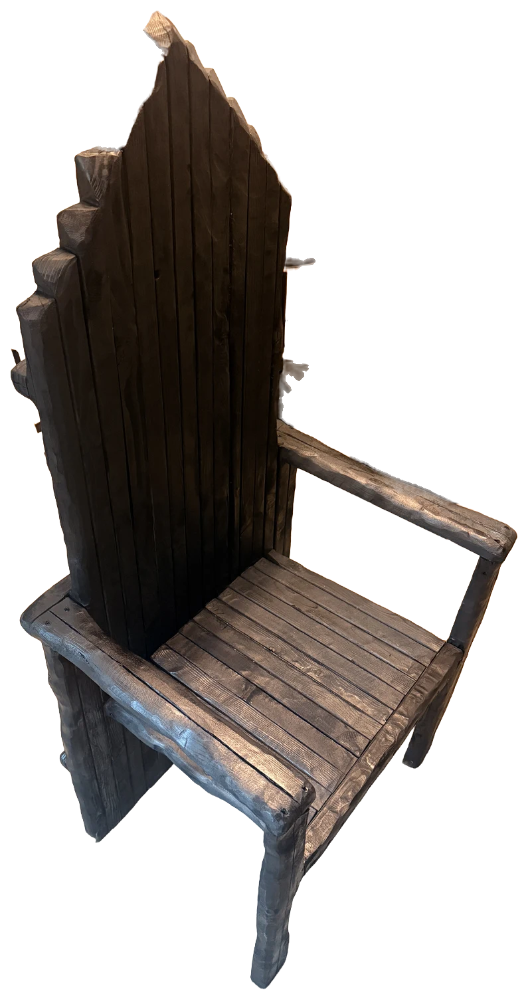
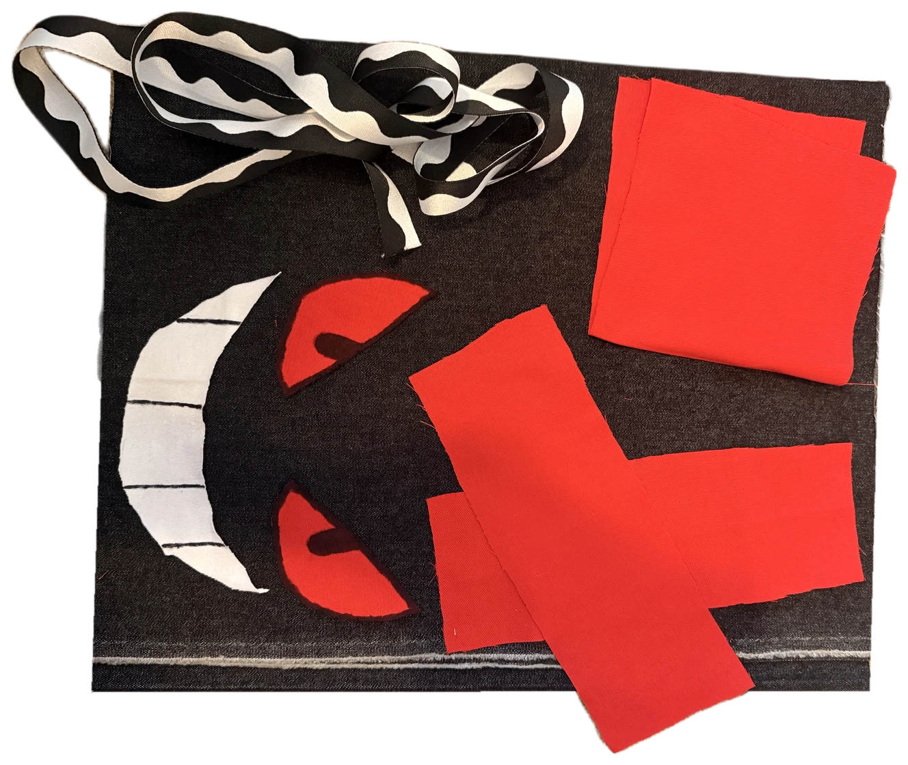

things I made
hardgoods
A chair, a bag and a lamp, from the first model to the finished piece.
chair
A tall wooden throne with a stepped, pointed back, built from slats and finished dark.



bag
A dark felt shoulder bag with a grinning face in red and white, and a wavy black and white strap.


lamp
A laser cut, stained wood lamp: square plates with cross slots, long slats and a stepped roof.